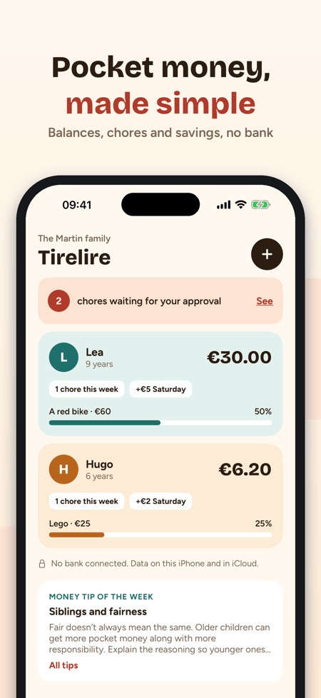
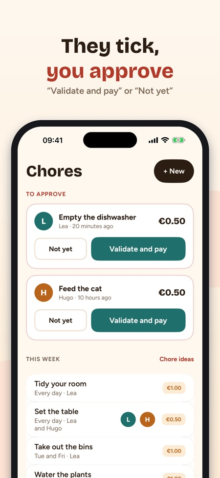
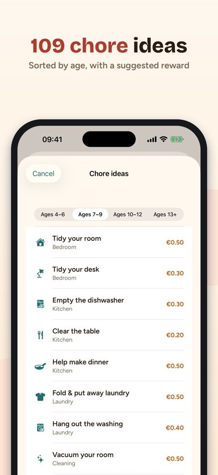

Chores, savings and goals. Each child's balance, chores to approve and their savings goal – shared between both parents through iCloud. No bank, no card and no ads.



Tirelire keeps track of your children's pocket money, rewards chores and helps them save for something that matters to them. No bank and no card: the app only keeps the records, and the coins stay in the real piggy bank.
EACH CHILD'S BALANCE
• One card per child: balance, chores this week, next pocket money and savings goal
• Pocket money is added by itself on the chosen day, even if the app was closed
• + Add / − Spend in two taps, with the full history
CHORES THAT PAY
• 109 chore ideas sorted by age (4–6, 7–9, 10–12 and 13+), each with a suggested reward
• Once, every day, some days or once a week
• Your child ticks, you approve: "Validate and pay" or "Not yet". Half done? Pay half.
A GOAL THAT MOTIVATES
• 32 goal templates: a bike, a game, a day out, a present…
• The ring shows how far they are and the estimated date at their pace
• "Get there faster" suggests chores that suit their age
A SIMPLE KID MODE
• On your iPhone or on theirs: their balance, goal and today's chores
• They tick what's done; Face ID or the iPhone passcode takes you back to the parent screens
• 14 badges to earn
FOR BOTH PARENTS
• Invite the other parent with iCloud sharing: the same balances, each approves from their own iPhone
• 35 tips for talking about money with children, by age
• Widget, reminder on pocket money day, CSV export, in euros, kroner/kronor, pounds, Swiss francs or dollars
PURCHASE
Usable without a purchase with one child. A one-time purchase unlocks unlimited children, sharing with the other parent, kid mode and the widget. No subscription.
Family data stays on the iPhone and in your own iCloud. Anonymous usage statistics are sent only if you allow it, and can be changed in Settings; nothing is sent in kid mode.